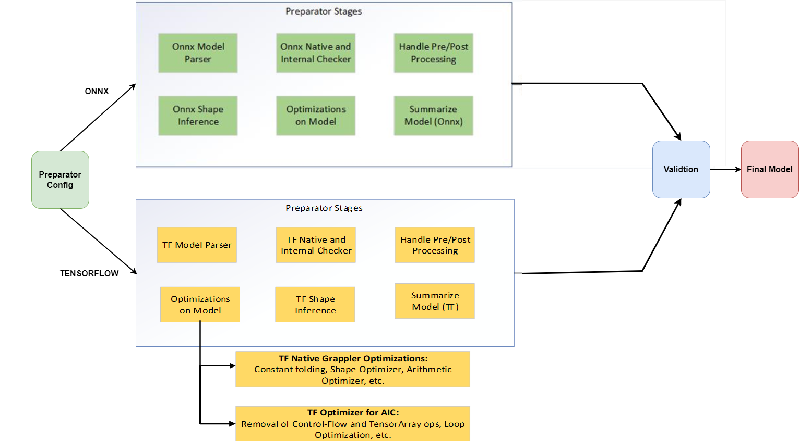
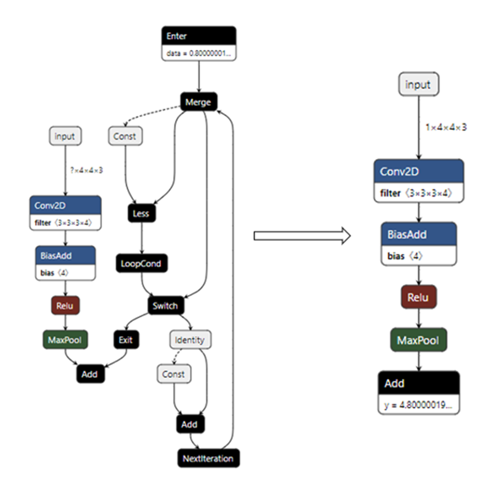

Introduction to the Model Preparator Tool¶
The QAic Model Preparator is an optional tool that automates generating Optimal AIC Friendly models for usage. It applies various optimizations and cleaning techniques for generation of the model. Developers can use this tool if the exported model fails compilation.
The current version supports ONNX and TF models. The tool checks the model, applies shape inference, cleans the model, applies various optimization, handles the pre-processing/post-processing nodes in the graph, and generates models as per the given user configuration (YAML).
Model Preparator Overview¶
Checkout the Model Export page on details on exporting the model from one framework to another framework, the most preferred and tested framework on MP is Onnx.
For detailed usage of the tool, refer to this link

usage: Sample Config Details are For Single model:
MODEL:
INFO:
MODEL_TYPE: EFFICIENTDET
INPUT_INFO:
- - input:0
- - 1
- 512
- 512
- 3
DYNAMIC_INFO:
- - input:0
- - batch_size
- 512
- 512
- 3
EXPORT_TYPE: ONNX
OPSET: 13
MODEL_PATH: efficientdet-d0.pb
NAME: Sample Model
DESCRIPTION: SSD MobileNet V1 Opset 10 Object Detection Model
VALIDATE: False
AIC_DEVICE_ID: 0
WORKSPACE: WORKSPACE
VERBOSE: INFO
INPUT_LIST_FILE: None
CUSTOM_OP_INFO_FILEPATH: None
PRE_POST_HANDLE:
NMS_PARAMS:
MAX_OUTPUT_SIZE_PER_CLASS: 100
MAX_TOTAL_SIZE: 100
IOU_THRESHOLD: 0.65
SCORE_THRESHOLD: 0.25
CLIP_BOXES: False
PAD_PER_CLASS: False
PRE_PLUGIN: True
TRANSFORMER_PACKED_MODEL: False
COMPRESSED_MASK: False
POST_PLUGIN: SMARTNMS
ANCHOR_BIN_FILE: None
ATTRIBUTES: None
Usage on Multi Model Config:
MODELS:
MODEL:
INFO:
MODEL_TYPE: CLASSIFICATION
INPUT_INFO:
- - model_1_input
- - 1
- 100
DYNAMIC_INFO:
- - model_1_input
- - batch
- 100
EXPORT_TYPE: ONNX
OPSET: 13
MODEL_PATH: model_1.onnx
NAME: Model_1
DESCRIPTION: Sample model-1
VALIDATE: True
AIC_DEVICE_ID: 0
WORKSPACE: ./workspace
VERBOSE: INFO
INPUT_LIST_FILE: None
CUSTOM_OP_INFO_FILEPATH: None
PRE_POST_HANDLE:
NMS_PARAMS:
MAX_OUTPUT_SIZE_PER_CLASS: 100
MAX_TOTAL_SIZE: 500
IOU_THRESHOLD: 0.5
SCORE_THRESHOLD: 0.01
CLIP_BOXES: False
PAD_PER_CLASS: False
PRE_PLUGIN: True
TRANSFORMER_PACKED_MODEL: False
COMPRESSED_MASK: False
POST_PLUGIN: NONE
ANCHOR_BIN_FILE: None
ATTRIBUTES: None
MODEL:
INFO:
MODEL_TYPE: CLASSIFICATION
INPUT_INFO:
- - model_2_input
- - 1
- 10
DYNAMIC_INFO:
- - model_2_input
- - batch
- 10
EXPORT_TYPE: ONNX
OPSET: 13
MODEL_PATH: model_2.onnx
NAME: Model_2
DESCRIPTION: Sample model-2
VALIDATE: True
AIC_DEVICE_ID: 0
WORKSPACE: ./workspace
VERBOSE: INFO
INPUT_LIST_FILE: None
CUSTOM_OP_INFO_FILEPATH: None
PRE_POST_HANDLE:
NMS_PARAMS:
MAX_OUTPUT_SIZE_PER_CLASS: 100
MAX_TOTAL_SIZE: 500
IOU_THRESHOLD: 0.5
SCORE_THRESHOLD: 0.01
CLIP_BOXES: False
PAD_PER_CLASS: False
PRE_PLUGIN: True
TRANSFORMER_PACKED_MODEL: False
COMPRESSED_MASK: False
POST_PLUGIN: NONE
ANCHOR_BIN_FILE: None
ATTRIBUTES: None
CHAINING_INFO: EDGES: - - Model_1::model_1_output - Model_2::model_2_input
WORKSPACE: ./workspace_chaining/
EXPORT_TYPE: ONNX
OPSET: 13
AIC_DEVICE_ID: 0
qaic-preparator options
Config Options: –config CONFIG Path to config file –silent Run in silent mode
For more details checkout the help menu in the tool: “python3 qaic-model- preparator.py –help “ Tool location in the SDK: “/opt/qti-aic/tools/qaic- pytools “
Sample details on Model Configuration Settings file¶
Model Preparator Configurations¶
MODEL
DESCRIPTION : Model Description
MODEL_TYPE : Provide the Model Category it belongs to
MODEL_PATH : Provide path to the downloaded original model file
INPUT_INFO : Provide Dictionary of Input names and its corresponding shapes.
DYNAMIC : Provide Dynamic Info to generate dynamic models
EXPORT_TYPE : ONNX or TENSORFLOW
VALIDATE : Validate the prepared model outputs with native framwork. (Ex: QAic FP16 vs OnnxRuntime FP32)
WORKSPACE : Provide the workspace directory to save the log files and final prepared model.
PRE_POST_HANDLE
ANCHOR_BIN_FILE : Path to Anchor bin files or None.
POST_PLUGIN : None by Default, If Object Detection Models, Provide “Smart-nms” or “QDetect” to either generate split model or full model.
PRE_PLUGIN : Handle pre plugin, This will be either keep/remove the pre processing from the graph.
NMS_PARAMS : This fields are specific to Object Detection models, and are helpful while creating full model based on QDetect nodes.
MAX_OUTPUT_SIZE_PER_CLASS : A scalar integer representing the maximum number of boxes to be selected by non-max suppression per class
MAX_TOTAL_SIZE : A integer representing maximum number of boxes retained over all classes. Note that setting this value to a large number may result in OOM error depending on the system workload.
IOU_THRESHOLD : A float representing the threshold for deciding whether boxes overlap too much with respect to IOU.
SCORE_THRESHOLD : A float representing the threshold for deciding when to remove boxes based on score.
CLIP_BOXES : If true, the coordinates of output nmsed boxes will be clipped to [0, 1]. If false, output the box coordinates as it is. Defaults to true.
PAD_PER_CLASS : If false, the output nmsed boxes, scores and classes are padded/clipped to max_total_size.
Optimizations Around Pre and Post Processing Handling in Preparator¶
PRE_PLUGIN
The PRE_PLUGIN field in the config is a boolean flag indicating the application of pre-processing optimizations if any. For example: In most of the computer vision models from the TensorFlow network we have seen that the preprocessing and post processing is part of the model graph making it dynamic in nature.
Since we are working mostly on static models (due to AOT), this will cause issues in the model compilation. Making the PRE_PLUGIN True will help in handling such pre-processing in the model graph and making it AIC friendly.
The preprocessing which is part of the model is handled and details regarding the same is tapped onto the log files.
The TF Optimizer looks for control-flow operators inside the model and replaces them with the appropriate/relevant operators.Major Optimizations include:
Switch-Merge Optimizer:
This arises due to the “tf.while_loop()” and “tf.cond()” APIs. The “prediction” flag of the switch operator is evaluated, and the corresponding path is selected for the model. A switch operator whose prediction flag is not constant cannot be optimized.
Loop Unrolling:
This arises due to the “tf.while_loop()” APIs. The loop is unrolled to make a Directed Acyclic Graph (DAG) based on the number of loop iterations. It cannot be applied in cases where the number of loop iterations is not fixed or there is a nested loop.
TensorArray Optimizations:
This includes all tensor-array operators like (TensorArray, TensorArrayWrite, TensorArrayRead, TensorArrayGather, TensorArrayScatter, and so on). This optimization replaces tensor-array operators with relevant known and supported operators.
For most of the NLP models, we have tokenization encodings of the inputs which we do in the host and pass the tokenized inputs to the model.

POST_PLUGIN
This field is mostly applicable to the Object Detection CV models, at QAic we have two options to run the ABP + NMS. Smart-NMS and QDetect.
SMART-NMS is a software application to help run the post processing part of the Object Detection (OD) models on host. Enabling this in the config will help add SMART-NMS to the model. Here we have intelligent way of identifying the post processing of the model if any and generating SMART-NMS specific model.
QDetect is a known custom operator from QAic to enabling running the post processing of the OD models on the device. Enabling this in the config, will help generate add QDetect to the model.
For NLP networks, the post-processing is decoding the tokens generated from model. Here we can use HuggingFace generation utils to do the post processing on the host.
Tutorial: Converting and executing a YoloV5 model with QAic¶
The following tutorial will demonstrate the end to end usage of Model Preparator Tool and the QAic Execution. This process begins with a trained source framework model, which is converted and built into a optimization model using Model Preparator, which are then executed on a QAic backend.
The tutorial will use YoloV5 as the source framework model.
The sections of the tutorial are as follows:
Tutorial Setup: Download the Original Model
Model Conversion: Generate the Optimized Model using Model Preparator APIs
Executing Example Model: Run the model on QAic Backend.
Plot Model Outputs on Sample Image
Tutorial Setup¶
The tutorial assumes general setup instructions have been followed at Setup.
import os
cwd = os.getcwd()
# Steps to generate the models from ultralytics repo.
!rm -rf yolov5
# Clone the Ultralytics repo.
!git clone --branch v6.0 --depth 1 https://github.com/ultralytics/yolov5.git
# Install the requirements
%cd yolov5
!git checkout v6.0
!pip3 install seaborn
# Export the Original yolo models.
!python3 -W ignore export.py --weights ./yolov5s.pt --include onnx --opset 13
# Copy the original model to the relevant paths in sdk
!cp yolov5s.onnx /opt/qti-aic/tools/qaic-pytools
%cd ..
!rm -rf yolov5/
Model Conversion¶
After the model assets have been acquired the model can be converted to optimized QAic model, and subsequently built for use by an application. In the below example we will be generating the optimized QDetect model as explained in the above pre/post processing section.
# Path to the installed SDK apps tools
%cd /opt/qti-aic/tools/qaic-pytools
# Run the preparator plugin with the relevant config file
!python -W ignore qaic-model-preparator.py --config /opt/qti-aic/tools/qaic-pytools/model_configs/samples/preparator/public/yolov5_ultralytics_model_info_qdetect.yaml --silent
# More details on various configs can be found here: /opt/qti-aic/tools/qaic-pytools/model_configs/samples/preparator/public
QAic Backend Execution¶
Compile the model binary using the qaic-exec and execute it using the qaic- runner with the following commands:
!rm -rf yolo-binaries-qdetect
!/opt/qti-aic/exec/qaic-exec -m=/opt/qti-aic/tools/qaic-pytools/WORKSPACE/yolov5s_preparator_aic100.onnx \
-aic-hw -onnx-define-symbol=batch_size,1 -aic-binary-dir=yolo-binaries-qdetect -convert-to-fp16 -compile-only
!/opt/qti-aic/exec/qaic-runner -t yolo-binaries-qdetect -a 1 -d 0 --time 15
Plot Model Outputs on Sample Image¶
Once we have the performance numbers, we will setup some model artifacts based on sample real image, Pre-Process, convert it to raw generate model outputs based on qaic-runner. Then using the generated outputs, we will plot it on the input images and get the final bounding boxes.
# Imports
import os
import time
import cv2
import numpy as np
import torch
from PIL import Image
def letterbox_image(image, size):
iw, ih = image.size
w, h = size
scale = min(w / iw, h / ih)
nw = int(iw * scale)
nh = int(ih * scale)
image = image.resize((nw, nh), Image.BICUBIC)
new_image = Image.new("RGB", size, (128, 128, 128))
pad_left = (w - nw) // 2
pad_top = (h - nh) // 2
new_image.paste(image, (pad_left, pad_top))
return new_image, scale, pad_left, pad_top
def preprocessImg(image_path, input_h, input_w):
image_src = Image.open(image_path)
resized, scale, pad_left, pad_top = letterbox_image(image_src, (input_w, input_h))
img_in = np.transpose(resized, (2, 0, 1)).astype(np.float32) # HWC -> CHW
img_in = np.expand_dims(img_in, axis=0)
img_in /= 255.0
return img_in, np.array(image_src, dtype=np.uint8), scale, pad_left, pad_top
# Download the sample image and pre-process
!rm -rf *.jpg
!wget -c https://ultralytics.com/images/zidane.jpg
img_preproc, img_orig, scale, pad_left, pad_top = preprocessImg("zidane.jpg", 640, 640)
img_preproc.tofile("input.raw")
# Generate the outputs
!/opt/qti-aic/exec/qaic-runner -t yolo-binaries-qdetect -i input.raw --write-output-dir yolo-output-qdetect -d 0
# Model artifacts to post process and plot the outputs on the image
def scale_coords(
coords, img_orig_h, img_orig_w, scale, pad_left, pad_top, xy_swap=True
):
# Rescale coords (xyxy) from preprocessed img to original img resolution
if xy_swap:
coords[:, :, [0, 2]] -= pad_top # y padding
coords[:, :, [1, 3]] -= pad_left # x padding
else:
coords[:, :, [0, 2]] -= pad_left # x padding
coords[:, :, [1, 3]] -= pad_top # y padding
coords[:, :, :4] /= scale
# Clip bounding xyxy bounding boxes to image shape (height, width)
if xy_swap:
coords[:, :, 0] = coords[:, :, 0].clip(0, img_orig_h - 1) # y1
coords[:, :, 1] = coords[:, :, 1].clip(0, img_orig_w - 1) # x1
coords[:, :, 2] = coords[:, :, 2].clip(0, img_orig_h - 1) # y2
coords[:, :, 3] = coords[:, :, 3].clip(0, img_orig_w - 1) # x2
else:
coords[:, :, 0] = coords[:, :, 0].clip(0, img_orig_w - 1) # x1
coords[:, :, 1] = coords[:, :, 1].clip(0, img_orig_h - 1) # y1
coords[:, :, 2] = coords[:, :, 2].clip(0, img_orig_w - 1) # x2
coords[:, :, 3] = coords[:, :, 3].clip(0, img_orig_h - 1) # y2
return coords
class_names = [
"person",
"bicycle",
"car",
"motorcycle",
"airplane",
"bus",
"train",
"truck",
"boat",
"traffic light",
"fire hydrant",
"stop sign",
"parking meter",
"bench",
"bird",
"cat",
"dog",
"horse",
"sheep",
"cow",
"elephant",
"bear",
"zebra",
"giraffe",
"backpack",
"umbrella",
"handbag",
"tie",
"suitcase",
"frisbee",
"skis",
"snowboard",
"sports ball",
"kite",
"baseball bat",
"baseball glove",
"skateboard",
"surfboard",
"tennis racket",
"bottle",
"wine glass",
"cup",
"fork",
"knife",
"spoon",
"bowl",
"banana",
"apple",
"sandwich",
"orange",
"broccoli",
"carrot",
"hot dog",
"pizza",
"donut",
"cake",
"chair",
"couch",
"potted plant",
"bed",
"dining table",
"toilet",
"tv",
"laptop",
"mouse",
"remote",
"keyboard",
"cell phone",
"microwave",
"oven",
"toaster",
"sink",
"refrigerator",
"book",
"clock",
"vase",
"scissors",
"teddy bear",
"hair drier",
"toothbrush",
]
def drawBoxes(
detections,
img_orig,
scale=1.0,
pad_left=0,
pad_top=0,
xy_swap=True,
filter_score=0.2,
line_thickness=None,
text_bg_alpha=0.0,
):
detection_boxes = detections[0] # [1, N, 4]
detection_scores = detections[1] # [1, N]
detection_classes = detections[2] # [1, N]
num_detections = detections[3] # [1]
img_orig_h, img_orig_w = img_orig.shape[:2]
detection_boxes = scale_coords(
detection_boxes, img_orig_h, img_orig_w, scale, pad_left, pad_top, xy_swap
)
tl = line_thickness or round(0.002 * (img_orig_w + img_orig_h) / 2) + 1
assert (
detection_boxes.shape[0] == 1
), "Currently plotting for single batch size only."
for i in range(num_detections[0]):
box = detection_boxes[0][i]
score = detection_scores[0][i]
cls = detection_classes[0][i]
if score < filter_score:
continue
if xy_swap:
y1, x1, y2, x2 = map(int, box)
else:
x1, y1, x2, y2 = map(int, box)
np.random.seed(int(cls) + 2020)
color = [np.random.randint(0, 255), 0, np.random.randint(0, 255)]
cv2.rectangle(
img_orig,
(x1, y1),
(x2, y2),
color,
thickness=max(int((img_orig_h + img_orig_w) / 600), 1),
lineType=cv2.LINE_AA,
)
label = "%s %.2f" % (class_names[int(cls)], score)
t_size = cv2.getTextSize(label, 0, fontScale=tl / 3, thickness=1)[0]
c2 = x1 + t_size[0] + 3, y1 - t_size[1] - 5
if text_bg_alpha == 0.0:
cv2.rectangle(img_orig, (x1 - 1, y1), c2, color, cv2.FILLED, cv2.LINE_AA)
else:
alphaReserve = text_bg_alpha
BChannel, GChannel, RChannel = color
xMin, yMin = int(x1 - 1), int(y1 - t_size[1] - 3)
xMax, yMax = int(x1 + t_size[0]), int(y1)
img_orig[yMin:yMax, xMin:xMax, 0] = img_orig[
yMin:yMax, xMin:xMax, 0
] * alphaReserve + BChannel * (1 - alphaReserve)
img_orig[yMin:yMax, xMin:xMax, 1] = img_orig[
yMin:yMax, xMin:xMax, 1
] * alphaReserve + GChannel * (1 - alphaReserve)
img_orig[yMin:yMax, xMin:xMax, 2] = img_orig[
yMin:yMax, xMin:xMax, 2
] * alphaReserve + RChannel * (1 - alphaReserve)
cv2.putText(
img_orig,
label,
(x1 + 3, y1 - 4),
0,
tl / 3,
[255, 255, 255],
thickness=1,
lineType=cv2.LINE_AA,
)
print(
f"X1:{x1}, Y1:{y1}, X2:{x2}, Y2:{y2}, Score:{score:.4f}, Cls_id:{class_names[int(cls)]}"
)
return img_orig
boxes = np.fromfile("yolo-output-qdetect/detection_boxes-activation-0-inf-0.bin", dtype="float32").reshape(1, 100, 4)
scores = np.fromfile("yolo-output-qdetect/detection_scores-activation-0-inf-0.bin", dtype="float32").reshape(1, 100)
classes = np.fromfile("yolo-output-qdetect/detection_classes-activation-0-inf-0.bin", dtype="int32").reshape(1, 100)
detections = np.fromfile("yolo-output-qdetect/num_detections-activation-0-inf-0.bin", dtype="int32").reshape(1)
decoded_output = [boxes, scores, classes, detections]
image_src = Image.open("zidane.jpg")
img_orig = np.array(image_src, dtype=np.uint8)
img_orig_plotted = drawBoxes(decoded_output, img_orig, scale, pad_left, pad_top, True)
img_orig_plotted = cv2.cvtColor(img_orig_plotted, cv2.COLOR_RGB2BGR)
cv2.imwrite("output_qdetect.jpg", img_orig_plotted)
# Plot the outputs on the image
import matplotlib.pyplot as plt
from matplotlib.pyplot import figure
img = np.array(Image.open("output_qdetect.jpg"))
fig, ax = plt.subplots(figsize=(15, 15))
ax.imshow(img)
For more examples on various models, Checkout our notebooks in SDK.
Location to notebooks in SDK:
/opt/qti-aic/tools/qaic- pytools/docs/preparator/examples/notebooks